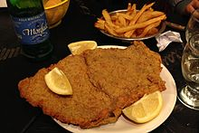

Milanesa

A full milanesa
The milanesa is a South American variation of the Lombard Veal Milanese, or the Austrian Wiener schnitzel, where generic types of meat breaded cutlet preparations are known as a milanesa.
The milanesa was brought to the Southern Cone by Italian immigrants during the mass emigration that created the Italian diaspora between 1860 and the 1920s. Its name probably reflects an original Milanese preparation, cotoletta alla milanese, which is similar to the Austrian Wiener schnitzel.
A milanesa consists of a thin slice of beef, chicken, fish, veal, or sometimes pork. Each slice is dipped into beaten eggs, seasoned with salt, and other condiments according to the cook's taste (like parsley and garlic). Each slice is then dipped in bread crumbs (or occasionally flour) and shallow-fried in oil, one at a time. Some people prefer to use very little oil and then bake them in the oven as a healthier alternative. A similar dish is the chicken parmigiana.
Steps
- Chop up parsley as finely as possible. Then peel the garlic and crush them in a mortar.
- Arrange milanesa steaks on a board and season with half the parsley, crushed garlic, pepper, and salt. Rub them well.
- If you have time and for the best flavors, let the milanesa steaks rest for an hour in the fridge.
- Crack open the eggs into a mixing bowl and add the rest of the parsley, a pinch of salt.
- Beat egg mixture well using a fork until everything is well integrated.
- Dip the milanesa steaks into the egg beaten mixture.
- Arrange the bread crumbs on a flat plate. Take the first piece of milanesa steak and place it on the plate. Flip so both sides are covered in breadcrumbs. Repeat this process for all pieces of meat.
- Heat a skillet with vegetable oil at medium-high heat. Wait at least three minutes for the oil to be very hot.
- Fry the steaks on both sides for about three minutes, until they are golden brown.
- After each steak is cooked, remove from the skillet, and drain on sheets of absorbent paper towels for about five minutes.
- Serve with fries and small green salad for a tasty Argentine feast.